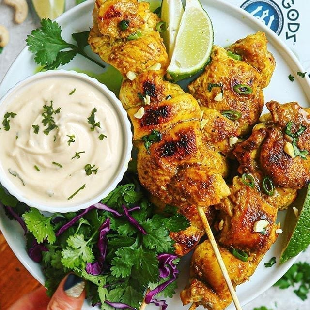

Vegan Mac And Cheese-At home
April 25, 2021 by ANKITHA
This super creamy and deliciously cheesy homemade vegan mac and cheese recipe will take you straight back to the macaroni and cheese from your childhood!
Ingredients Required:
1 ¾ cups whole wheat elbow macaroni,
2 potatoes,
1 small onion(chopped),
½ carrot(finely chopped,)
1 clove garlic(minced),
2 tablespoons water(or as needed),
¾ cup water,
½ cup cashews,
¼ cup soy milk,
¼ cup nutritional yeast,
1 tablespoon lemon juice,
1 teaspoon sea salt,
1 dash ground paprika,
1 dash cayenne pepper,
2 tablespoons water,
2 cups chopped broccoli florets,

Directions:
Bring a large pot of lightly salted water to a boil. Cook macaroni in the boiling water, stirring occasionally, until tender yet firm to the bite, about 8 minutes. Drain.
Place potatoes into a large pot and cover with salted water; bring to a boil. Reduce heat to medium-low and simmer until tender, about 20 minutes. Drain. Peel and finely chop potatoes when cool enough to handle.
Combine potatoes, onion, carrot, and garlic in a small pot over medium heat. Add 2 tablespoons water and cook until soft enough to blend and water is mostly evaporated, about 3 minutes. Remove from heat. Transfer sauce to a blender. Add 3/4 cup water, cashews, soy milk, nutritional yeast, lemon juice, salt, paprika, and cayenne. Cover the blender and hold lid down with a potholder; pulse a few times before leaving on to blend until smooth.Heat 2 tablespoons water in a nonstick pan over medium heat. Add broccoli and cook until soft but still a little crunchy, about 5 minutes. Transfer to a large serving bowl. Pour sauce in and mix until thoroughly coated.
Nutrition Facts:
326 calories; protein 14.5g; carbohydrates 51.8g; fat 9.2g; sodium 586.1mg.
LOTUS BISCOFF FREAKSHAKE
April 25, 2021 by PRIYANSHU
A refreshing and indulgent Summer iced drink for all Lotus Biscoff lovers! This Lotus Biscoff Freakshake is so rich and decadent just like a dessert in a glass. You only need a few ingredients to create this glass of sinful deliciousness.

What Is A Freakshake
In simple words, it's a milkshake gone crazy. There is a lot of madness going on this ultimate luscious Lotus Biscoff Freakshake. This milkshake not only helps beat the Summer heat but it also satisfies any dessert cravings. The best part is you only need 4 ingredients to make it.
Ingredients Required:
>
Of course, Lotus Biscoff spread is an absolute must. For this freakshake I use the 'smooth' spread but you can use 'crunchy' too.
Lotus Biscoff ice cream can be replaced with vanilla ice cream. And to make the shake less rich you can also skip it entirely.
Use your choice of milk. I used full-fat milk.
Add sugar to sweeten the drink slightly but it is optional.
Lotus Biscoff cookies and whipped cream are for decoration only.
Directions:
Blend. Blitz milk, ice cream, Biscoff spread and ice cubes till smooth.
Decorate. Drizzle melted Biscoff spread inside the glasses, smear some of the spread on the top edges of the glass and press crushed Biscoff cookies on it.
Assemble. In the glass, pour milkshake, add whipped cream, drizzle melted Biscoff spread and top with a cookie.
Serve cold and enjoy!
Shish Tawook – Have It Like The Locals
April 25, 2021 by RAGUL
Shish Tawook has made it to the menu of almost every restaurant in Dubai. Served as a traditional kebab, Shish Tawook tastes better when served sandwiched in bread. You can find this dish served in many other parts of the world, including India and Pakistan, among others. You can pair it with pickles and fries. This is one of the most popular Dubai traditional food.
While similar, chicken tawook and chicken shawarma are not the same. Yes, both are made of boneless skinless chicken and are loaded with Middle Eastern flavors, but there is a difference in the marinade and in the way each dish is prepared.
Must try: With Lebanese garlic dip, pickles, and fries

The key difference in the marinade is the use of yogurt, and there is also a difference in the flavor profile. Tawook uses a creamy yogurt-based marinade infused with lemon, garlic, seasonings--like oregano, allspice, and ginger--and a couple tablespoons of tomato paste which give the grilled chicken a beautiful red hue. Shawarma, on the other hand, skips the yogurt and the tomato past, relying more on olive oil and citrus for the base, onions, garlic, and a longer list of spices that lean warmer and slightly spicier, including turmeric, cumin, coriander, and cayenne.
The method of preparation and cooking is also different. Shish tawook is grilled on skewers, while shawarma is traditionally slow-roasted on a vertical spit for hours, though to make it at home, I bake my chicken shawarma in the oven for an easy option To know more..
Price Range: INR 500